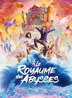
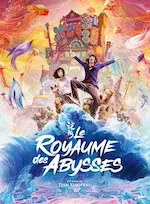
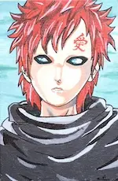
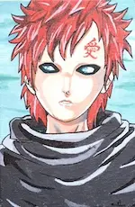
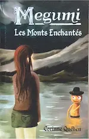

2024
Juillet
-
25 —
 Drama japonais From 5 to 9
Drama japonais From 5 to 9
- 13 (édité) — Balade un dimanche
-
11 —
Actions & comédie, quelques frissons, poney de Noël et émotions fortes


 Chien et chat, The fall guy, Sleep, Comment rencontrer l’âme sœur en 10 leçons, Love coach malgré moi, Arthur the King
Chien et chat, The fall guy, Sleep, Comment rencontrer l’âme sœur en 10 leçons, Love coach malgré moi, Arthur the King - 11 (édité) — 💖 Les Cosmiques 🵠de Diatomée
-
05 —
Tournage qui vire au fiasco et intellos asociaux
Fiasco, The Big Bang Theory
-
04 —
Flics fêlés, aides soignants impliqués, prof dépassé et requins mutants


 Les infaillibles, Maison de retraite 2, Pas de vagues, Sous la Seine
Les infaillibles, Maison de retraite 2, Pas de vagues, Sous la Seine -
04 —
Amis imaginaires, guide à plumes, monstres et rêve plus doux que la réalité


 Blue et compagnie, Le garçon et le héron, Monster High 2, ♡ Le Royaume des Abysses
Blue et compagnie, Le garçon et le héron, Monster High 2, ♡ Le Royaume des Abysses
Juin
-
30 —
Musique, timidité, bêtise et politiquement incorrect


 ♡ Música, ♡ L’amour au pied du mur, À la conquête de Billy Walsh, L’idée d’être avec toi, My dear f***ing prince
♡ Música, ♡ L’amour au pied du mur, À la conquête de Billy Walsh, L’idée d’être avec toi, My dear f***ing prince -
29 —
 Objectif petit ami, roman
Objectif petit ami, roman
-
29 —
Dessins du passé


 
 -
27 —
 Megumi - Les Monts Enchantés deuxième version, roman
Megumi - Les Monts Enchantés deuxième version, roman
- 23 — Les dents de Chastel, roman
-
16 —
 Megumi - Le ponson magique, roman
Megumi - Le ponson magique, roman
- 13 —  Megumi - Les Monts enchantés, roman
-
02 —
Dernières lectures
 Les abysses du mal (Marc Charuel), Sang d'encre (Robert Galbraith)
Les abysses du mal (Marc Charuel), Sang d'encre (Robert Galbraith)
Avril
-
20 —
 À son image de Jérôme Ferrari
À son image de Jérôme Ferrari
-
06 —
 À la lumière du petit matin d’Agnès Martin-Lugand
À la lumière du petit matin d’Agnès Martin-Lugand
-
06 —
 Gen-X de Diatomée
Gen-X de Diatomée
-
01 —
Action, poésie et comédie

 Road House, Le château solitaire dans le miroir, Pourquoi j’ai pas mangé mon père
Road House, Le château solitaire dans le miroir, Pourquoi j’ai pas mangé mon père